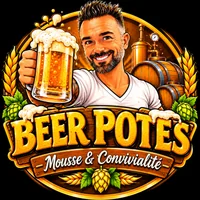
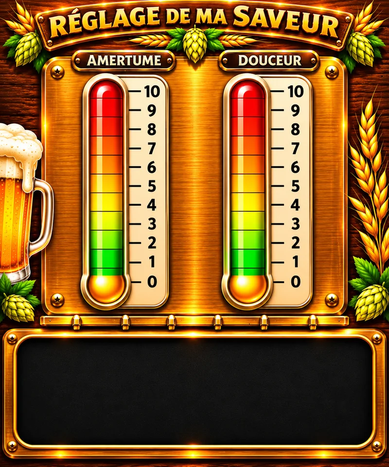
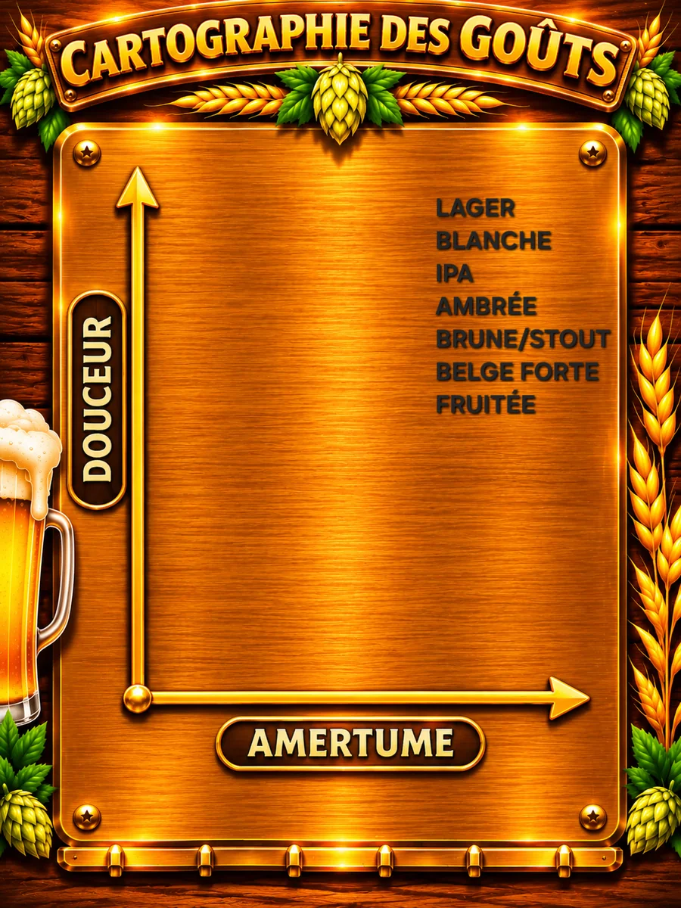

🗺️ Carte des goûts


Touche un point pour voir les détails
Profils indicatifs (échelle 0–10). Les bières inconnues sont identifiées par l’IA à partir de la photo.
📜 Histoires & anecdotes
📸 Analyse ta bière
Photographie une bière en rayon, découvre son profil et vois si elle te correspond.